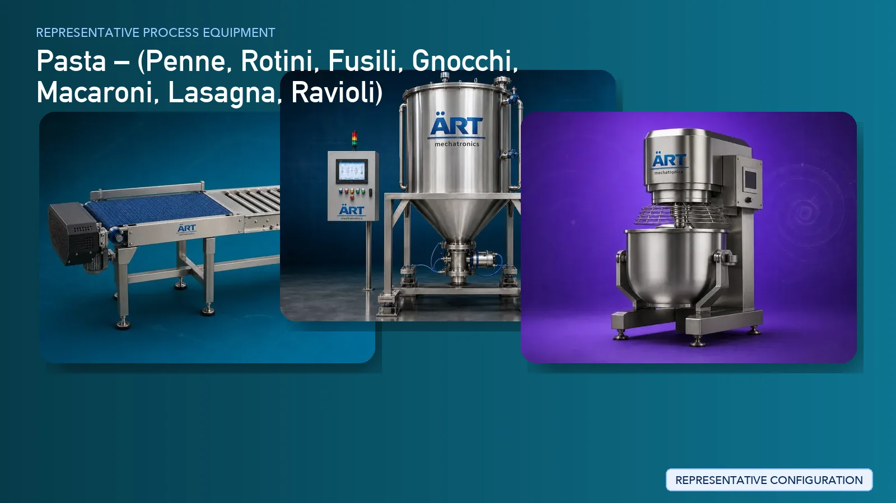

Pasta Production Plant & Machinery Solutions (Penne, Rotini, Macaroni & More)
Pasta is one of the most widely consumed food products globally, available in various forms such as penne, rotini, macaroni, fusilli, and other extruded pasta shapes.

About Pasta Production Plant & Machinery Solutions processing
ART Mechatronics provides complete turnkey solutions for pasta manufacturing plants, offering advanced systems for mixing, extrusion, shaping, drying, and packaging. Our solutions are designed for high-capacity production, consistent product quality, and efficient automated operations for global markets.
Complete Pasta Process Flow
Raw materials such as wheat flour (semolina), water, and additives are received and fed into the system.
Ensures continuous and controlled input.
Flour and water are mixed to form uniform dough.
Ensures:
- Proper hydration
- Uniform dough consistency
- High-quality final product
Dough is processed through an extruder to form pasta shapes.
Performs:
- Compression and shaping
- Formation of different pasta types
Shapes produced:
- Penne
- Rotini
- Macaroni
- Fusilli
- Shells and more
Extruded pasta is cut into required sizes.
Ensures uniform product size.
Fresh pasta is dried under controlled temperature and humidity.
Ensures:
- Proper moisture reduction
- Long shelf life
- Product strength
Final inspection ensures consistency in size, shape, and quality.
Finished pasta is packed into pouches or cartons.
Suitable for retail and bulk packaging.
Machinery Required for Pasta Plant
- Material Handling Systems
- Storage Silos
- Mixer / Dough Mixer
- Pasta Extruder
- Cutting System
- Pasta Dryer
- Cooling Conveyor
- Inspection System
- Packaging Machines
Turnkey Pasta Plant Solutions
ART Mechatronics offers complete turnkey solutions for pasta manufacturing plants, including:
- Process design & plant layout
- Mixing and extrusion systems
- Drying and cooling systems
- Automation & control panels
- Packaging line integration
- Installation & commissioning
- After-sales support
We customize solutions based on:
- Product type (penne, rotini, macaroni, etc.)
- Production capacity
- Drying requirements
- Packaging format
Why Choose Art Mechatronics
- Expertise in extrusion-based food processing systems
- Advanced pasta shaping and drying technology
- High-capacity automated production lines
- Hygienic food-grade machinery design
- Consistent product quality
- Global export capability
Machinery in a Pasta Production Plant & Machinery Solutions plant
Where it's used
Get pricing & specs for the Pasta Production Plant & Machinery Solutions plant
Share the product, target capacity, current process and plant location. These details help our engineers discuss the right machine or line configuration.
One partner, from design to start-up
ART Mechatronics designs, manufactures, installs and commissions your Pasta Production Plant & Machinery Solutions solution with regional presence in India, UAE and Thailand.